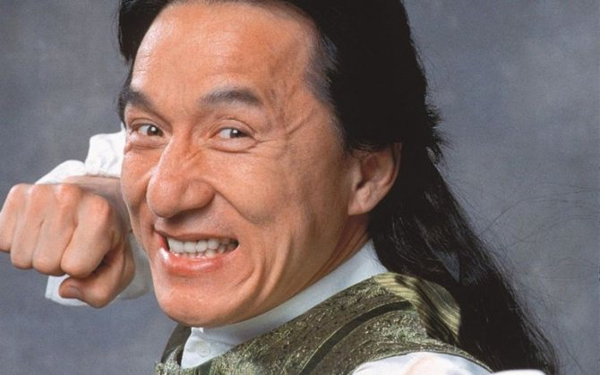

Дже́кі Чан — гонконзький, китайський та американський кіноактор, режисер, продюсер, каскадер, сценарист і співак. Почав свою акторську кар'єру в 1962 році і продовжує досі зніматись у фільмах. Володар почесної премії «Оскар» за видатні заслуги в кінематографі 2016 року.
У 1976 Джекі Чан отримує телеграму від Віллі Чана — гонконзького продюсера, який був вражений трюками юнака. Віллі запропонував Джекі роль у фільмі режисера Ло Вея (1918—1996). Ло бачив Чана в фільмі Джона Ву «Рука смерті» і вирішив зробити з молодого актора нового Брюса Лі у фільмі «Новий кулак люті».
Пізніше Джекі повернувся до студії режисера Ло Вея, і той намагався скопіювати комічний хіт «П'яного майстра» у фільмах «Трохи про кунг-фу» і «Астральне кунг-фу». Також Ло Вей дозволив Чану знятися з Кенет Тсангом у фільмі «Безстрашна гієна».